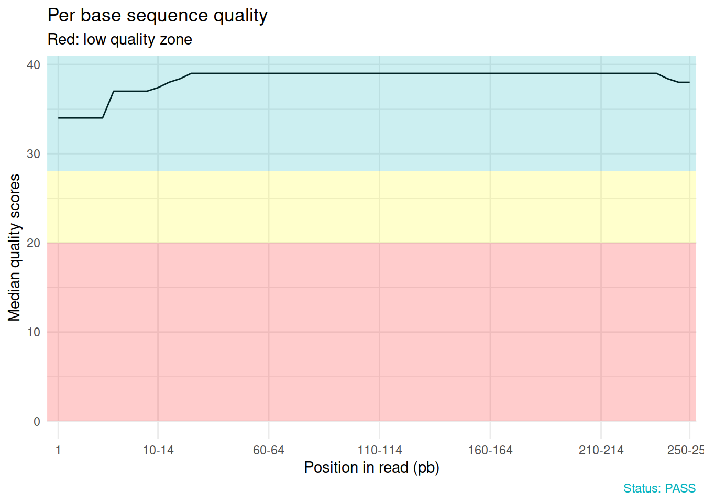
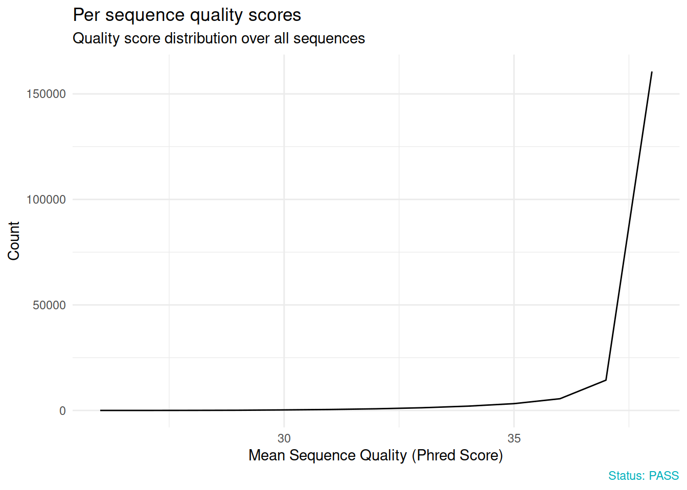
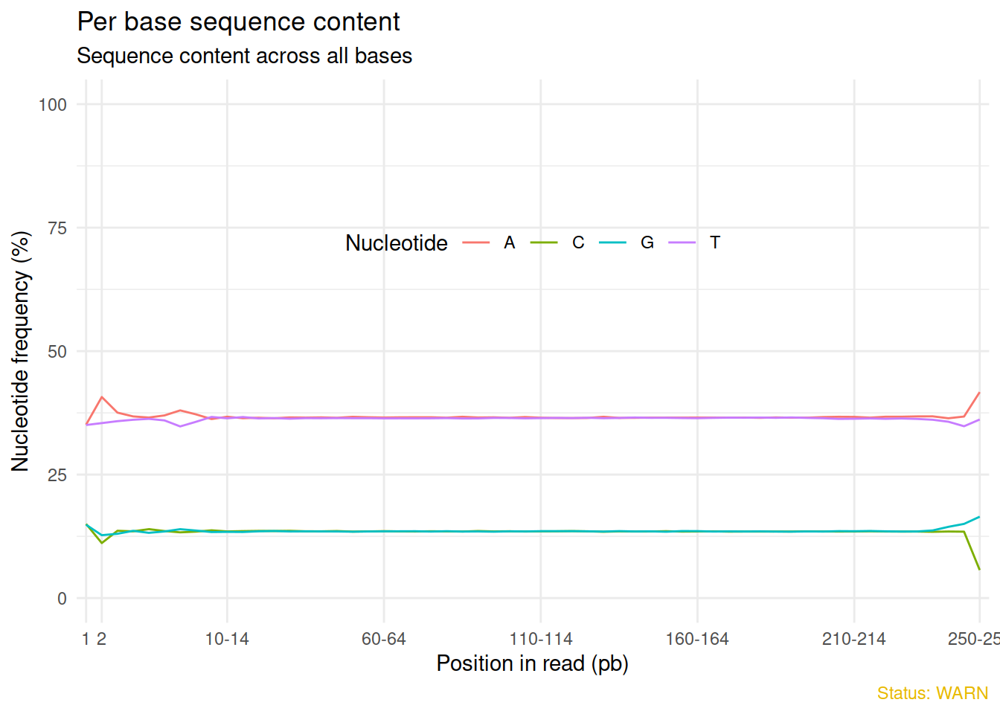
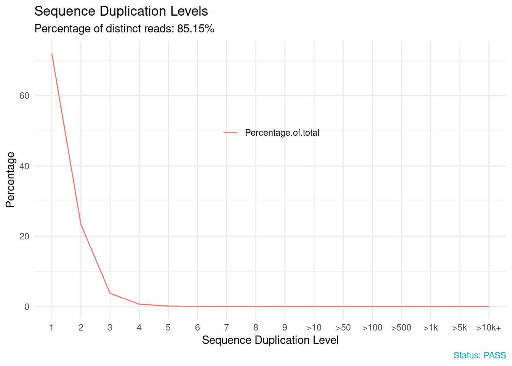
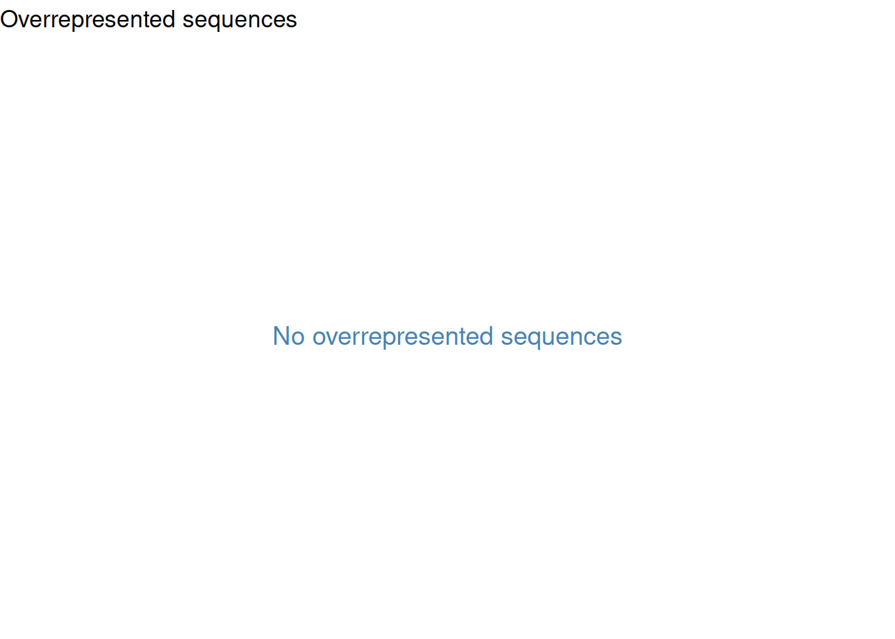
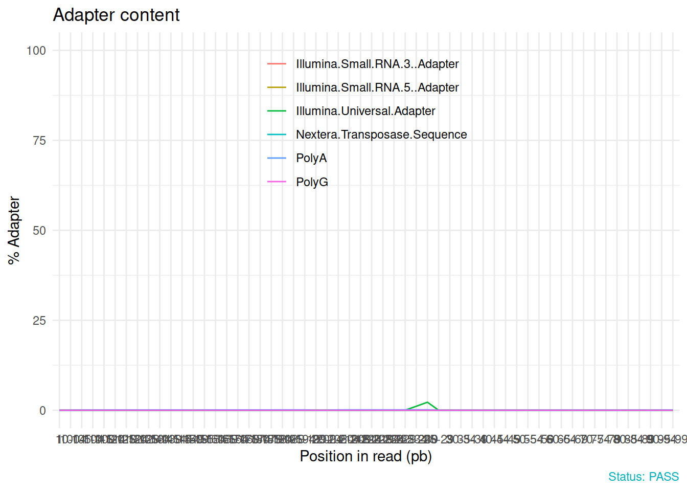
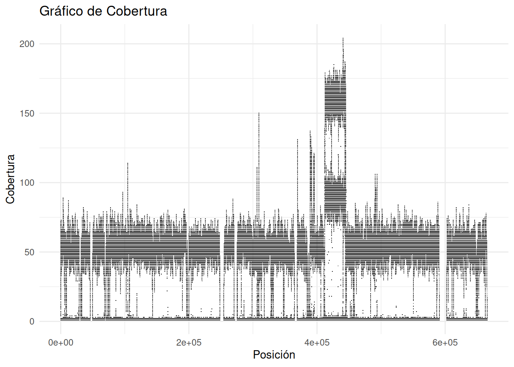

Pipeline de Genómica en R
Descarga de genomas desde NCBI
En esta sección, se realiza la descarga de un genoma desde la base de datos del NCBI utilizando el código proporcionado:
url <- fromJSON(file = "data/reference/ref.json")
filename <- "GCF_000085865.1_ASM8586v1_genomic.fna.gz"
download_genome(url$urlref, filename, "data/reference/")El código utiliza el archivo JSON ref.json para obtener la URL del genoma y luego descarga el genoma en formato FASTA comprimido. Los archivos de genoma descargados se almacenan en el directorio data/reference/.
Descarga de archivos desde SRA - NCBI
Esta sección demuestra cómo descargar archivos desde la Base de Datos de Archivos de Secuencia (SRA) de NCBI utilizando la función download_sra_files:
download_sra_files(id = "SRR15616379")
download_sra_files(id = "SRR26204001")El código descarga archivos SRA utilizando los identificadores específicos proporcionados (SRR15616379 y SRR26204001) y luego los convierte en archivos FASTQ en el directorio especificado. Ver Aqui
Control de calidad de archivos FASTQ
En esta sección, se realiza un control de calidad de los archivos FASTQ descargados utilizando la biblioteca fastqc. Primero, se listan las lecturas FASTQ y se genera un perfil de calidad:
lecturas <- list_fastq(pattern = c("SRR15616379_1.fastq.gz", "SRR15616379_2.fastq.gz"))Luego, se ejecuta fastqc para realizar un control de calidad más detallado:
Este código genera informes de calidad en el directorio results/.
Informe de calidad multiqc
Para generar un informe de calidad consolidado utilizando MultiQC, se utiliza el siguiente código:
qc_report(qc.dir, result.file = "results/multiqc/",
experiment = "Mycoplasma")Este código genera un informe de calidad consolidado en el directorio results/multiqc/ utilizando la información de calidad previamente generada por FastQC.
Además, se muestran ejemplos de cómo realizar varios tipos de análisis y visualizaciones de calidad utilizando la biblioteca qc_report. Estos ejemplos incluyen el análisis de contenido de GC, calidad de secuencia base por base, duplicación de secuencias y más.
Plots de calidad FastQC
qc <- qc_read("results/SRR15616379_1_fastqc.zip")Reading: results/SRR15616379_1_fastqc.zipRows: 10 Columns: 3
── Column specification ────────────────────────────────────────────────────────
Delimiter: "\t"
chr (3): status, module, sample
ℹ Use `spec()` to retrieve the full column specification for this data.
ℹ Specify the column types or set `show_col_types = FALSE` to quiet this message.
Rows: 8 Columns: 2
── Column specification ────────────────────────────────────────────────────────
Delimiter: "\t"
chr (2): Measure, Value
ℹ Use `spec()` to retrieve the full column specification for this data.
ℹ Specify the column types or set `show_col_types = FALSE` to quiet this message.
Rows: 58 Columns: 7
── Column specification ────────────────────────────────────────────────────────
Delimiter: "\t"
chr (1): Base
dbl (6): Mean, Median, Lower Quartile, Upper Quartile, 10th Percentile, 90th...
ℹ Use `spec()` to retrieve the full column specification for this data.
ℹ Specify the column types or set `show_col_types = FALSE` to quiet this message.
Rows: 13 Columns: 2
── Column specification ────────────────────────────────────────────────────────
Delimiter: "\t"
dbl (2): Quality, Count
ℹ Use `spec()` to retrieve the full column specification for this data.
ℹ Specify the column types or set `show_col_types = FALSE` to quiet this message.
Rows: 58 Columns: 5
── Column specification ────────────────────────────────────────────────────────
Delimiter: "\t"
chr (1): Base
dbl (4): G, A, T, C
ℹ Use `spec()` to retrieve the full column specification for this data.
ℹ Specify the column types or set `show_col_types = FALSE` to quiet this message.
Rows: 101 Columns: 2
── Column specification ────────────────────────────────────────────────────────
Delimiter: "\t"
dbl (2): GC Content, Count
ℹ Use `spec()` to retrieve the full column specification for this data.
ℹ Specify the column types or set `show_col_types = FALSE` to quiet this message.
Rows: 58 Columns: 2
── Column specification ────────────────────────────────────────────────────────
Delimiter: "\t"
chr (1): Base
dbl (1): N-Count
ℹ Use `spec()` to retrieve the full column specification for this data.
ℹ Specify the column types or set `show_col_types = FALSE` to quiet this message.
Rows: 41 Columns: 2
── Column specification ────────────────────────────────────────────────────────
Delimiter: "\t"
chr (1): Length
dbl (1): Count
ℹ Use `spec()` to retrieve the full column specification for this data.
ℹ Specify the column types or set `show_col_types = FALSE` to quiet this message.
Rows: 16 Columns: 2
── Column specification ────────────────────────────────────────────────────────
Delimiter: "\t"
chr (1): Duplication Level
dbl (1): Percentage of total
ℹ Use `spec()` to retrieve the full column specification for this data.
ℹ Specify the column types or set `show_col_types = FALSE` to quiet this message.
Rows: 0 Columns: 0
ℹ Use `spec()` to retrieve the full column specification for this data.
ℹ Specify the column types or set `show_col_types = FALSE` to quiet this message.
Rows: 56 Columns: 7
── Column specification ────────────────────────────────────────────────────────
Delimiter: "\t"
chr (1): Position
dbl (6): Illumina Universal Adapter, Illumina Small RNA 3' Adapter, Illumina...
ℹ Use `spec()` to retrieve the full column specification for this data.
ℹ Specify the column types or set `show_col_types = FALSE` to quiet this message.
Rows: 0 Columns: 2
── Column specification ────────────────────────────────────────────────────────
Delimiter: "\t"
chr (2): Total Deduplicated Percentage, 85.14753304887951
ℹ Use `spec()` to retrieve the full column specification for this data.
ℹ Specify the column types or set `show_col_types = FALSE` to quiet this message.qc_plot(qc, "Per base sequence quality")
qc_plot(qc, "Per sequence quality scores")
qc_plot(qc, "Per base sequence content")
qc_plot(qc, "Per sequence GC content")
qc_plot(qc, "Sequence duplication levels")
qc_plot(qc, "Overrepresented sequences")
qc_plot(qc, "Adapter content")
Filtrado de lecturas de archivos FASTQ
En esta sección, se realiza el filtrado de lecturas de los archivos FASTQ utilizando la función filter_reads previamente definida:
log_filter <- filter_reads(name = lecturas$name, lf = lecturas$lf,
lr = lecturas$lr, trunc = 250)El código ejecuta la función filter_reads en las lecturas previamente listadas, aplicando un valor de truncamiento de 250. El registro del filtrado se almacena en la variable log_filter.
Ensamblaje de genomas
En esta sección, se realiza el ensamblaje de genomas utilizando la biblioteca bowtie2. Primero, se descomprime el genoma de referencia:
gunzip("data/reference/GCF_000085865.1_ASM8586v1_genomic.fna.gz")Luego, se construye el índice de referencia para bowtie2:
bowtie2_build("data/reference/GCF_000085865.1_ASM8586v1_genomic.fna",
bt2Index = "data/reference/index/myco" , overwrite = TRUE)Finalmente, se realiza el alineamiento de los archivos FASTQ a la referencia utilizando bowtie2:
bowtie2(bt2Index = "data/reference/index/myco",
samOutput = "results/SRR15616379.sam",
seq1 = "data/processed_data/filtered_F/SRR15616379_filt_1.fastq",
seq2 = "data/processed_data/filtered_R/SRR15616379_filt_2.fastq",
"--threads=3")Estos pasos incluyen la construcción del índice de referencia y el alineamiento de las lecturas de secuenciación en los archivos FASTQ a la referencia genómica. El resultado se almacena en un archivo SAM en el directorio results/.
Manipulación de archivos de alineación
En esta sección, se realizan diversas operaciones en archivos de alineación BAM utilizando la biblioteca Rsamtools.
Conversión a archivos BAM
Primero, se convierte el archivo SAM previamente generado en un archivo BAM:
asBam("results/SRR15616379.sam")Lectura de archivo BAM
Se carga el archivo BAM para realizar estadísticas de alineación:
Loading required package: GenomeInfoDbLoading required package: BiocGenerics
Attaching package: 'BiocGenerics'The following objects are masked from 'package:stats':
IQR, mad, sd, var, xtabsThe following objects are masked from 'package:base':
anyDuplicated, append, as.data.frame, basename, cbind, colnames,
dirname, do.call, duplicated, eval, evalq, Filter, Find, get, grep,
grepl, intersect, is.unsorted, lapply, Map, mapply, match, mget,
order, paste, pmax, pmax.int, pmin, pmin.int, Position, rank,
rbind, Reduce, rownames, sapply, setdiff, sort, table, tapply,
union, unique, unsplit, which.max, which.minLoading required package: S4VectorsLoading required package: stats4
Attaching package: 'S4Vectors'The following objects are masked from 'package:base':
expand.grid, I, unnameLoading required package: IRangesLoading required package: GenomicRangesLoading required package: BiostringsLoading required package: XVector
Attaching package: 'Biostrings'The following object is masked from 'package:base':
strsplitbamFile <- BamFile("results/SRR15616379.bam")Estadísticas de alineación
Se calculan estadísticas de alineación a partir del archivo BAM:
bam <- countBam(bamFile)
quickBamFlagSummary(bamFile) group | nb of | nb of | mean / max
of | records | unique | records per
records | in group | QNAMEs | unique QNAME
All records........................ A | 377410 | 188705 | 2 / 2
o template has single segment.... S | 0 | 0 | NA / NA
o template has multiple segments. M | 377410 | 188705 | 2 / 2
- first segment.............. F | 188705 | 188705 | 1 / 1
- last segment............... L | 188705 | 188705 | 1 / 1
- other segment.............. O | 0 | 0 | NA / NA
Note that (S, M) is a partitioning of A, and (F, L, O) is a partitioning of M.
Indentation reflects this.
Details for group M:
o record is mapped.............. M1 | 322599 | 167765 | 1.92 / 2
- primary alignment......... M2 | 322599 | 167765 | 1.92 / 2
- secondary alignment....... M3 | 0 | 0 | NA / NA
o record is unmapped............ M4 | 54811 | 33871 | 1.62 / 2
Details for group F:
o record is mapped.............. F1 | 166780 | 166780 | 1 / 1
- primary alignment......... F2 | 166780 | 166780 | 1 / 1
- secondary alignment....... F3 | 0 | 0 | NA / NA
o record is unmapped............ F4 | 21925 | 21925 | 1 / 1
Details for group L:
o record is mapped.............. L1 | 155819 | 155819 | 1 / 1
- primary alignment......... L2 | 155819 | 155819 | 1 / 1
- secondary alignment....... L3 | 0 | 0 | NA / NA
o record is unmapped............ L4 | 32886 | 32886 | 1 / 1seqinfo(bamFile)Seqinfo object with 1 sequence from an unspecified genome:
seqnames seqlengths isCircular genome
NC_013511.1 665445 NA <NA>Conteo de profundidad por posición
seqnames pos strand nucleotide count
1 NC_013511.1 1 + A 1
2 NC_013511.1 1 + C 1
3 NC_013511.1 1 - C 1
4 NC_013511.1 1 + G 1
5 NC_013511.1 1 + T 6
6 NC_013511.1 1 - T 9table(res$strand, res$nucleotide)
A C G T N = - +
+ 259168 97674 131968 236724 0 0 4042 0
- 239533 127380 97801 256096 0 0 3281 0
* 0 0 0 0 0 0 0 0# coverage plot
cover <- res[,c("pos","count")]
#plot(count ~ pos, cover , pch =".")Plot de profundidad
library(ggplot2)
# Crear un gráfico de cobertura utilizando ggplot2
ggplot(cover, aes(x = pos, y = count)) +
geom_point(shape = ".", size = 1) +
labs(title = "Gráfico de Cobertura",
x = "Posición",
y = "Cobertura") +
theme_minimal()
Manipulación de archivos BAM de gran tamaño
Se muestra cómo manejar archivos BAM de gran tamaño ajustando el tamaño de lectura: